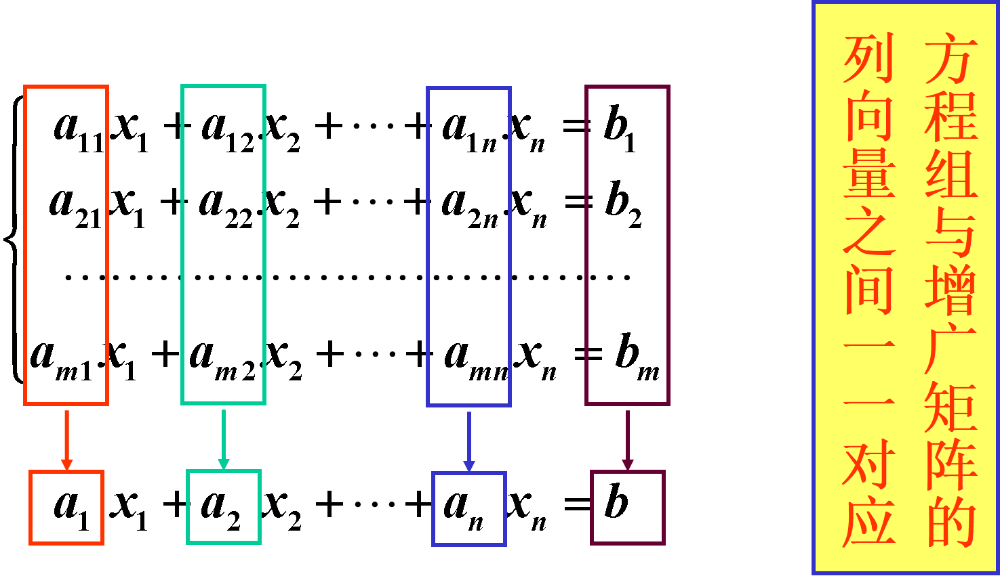
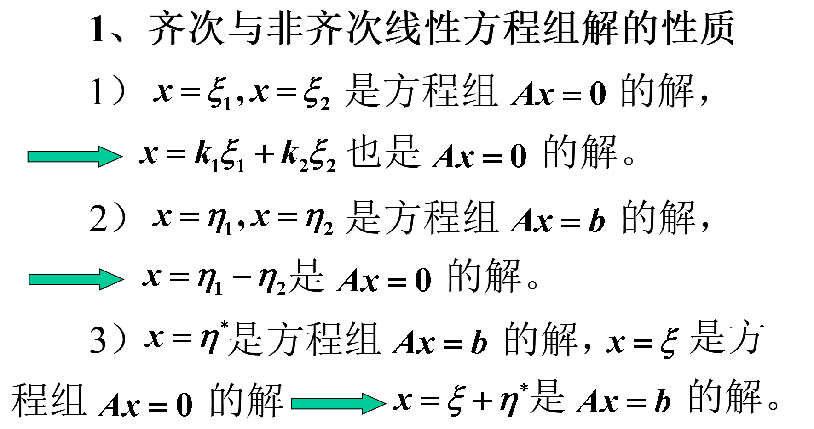
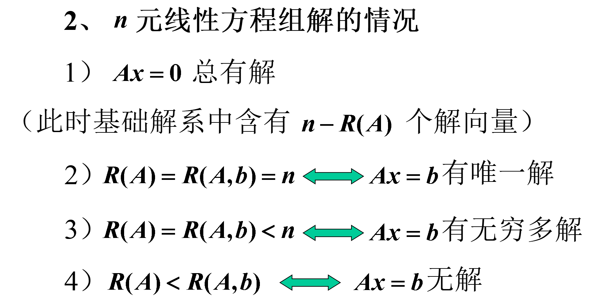
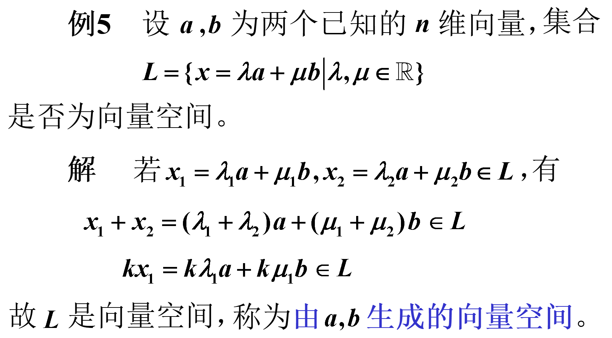

1 向量组及其线性组合
1.1 向量
【定义1】n个有次序的数a1,a2,⋯,an所组成的数组称为n维向量，这n个数称为该向量的n个分量，第i个数ai称为第i个分量。
1.1.1 向量的表示法
n维向量写成一行，称为行向量，也称为行矩阵，常用aT,bT,αT,βT等表示，如aT=(a1,a2,⋯,an)。
n维向量写成一列，称为列向量，也称为列矩阵，常用a,b,α,β等表示。
说明：
- 行向量和列向量总看成两个不同的向量。
- 行向量和列向量都按矩阵的运算法则进行运算。
- 在没有明确说明时，向量均理解为列向量。
1.2 向量组与矩阵的关系
由若干个同维数的列向量（或同维数的行向量）组成的集合，称为一个向量组。
反之，由有限个向量组成的向量组可以构成一个矩阵。

1.3 线性组合及线性表示
【定义2】给定向量组A:a1,a2,⋯,am，对于任何一组实数k1,k2,⋯,km，表达式k1a1+k2a2+⋯+kmam称为向量组A的一个线性组合，k1,k2,⋯,km称为这个线性组合的系数。
给定向量组A:a1,a2,⋯,am和向量b，如果存在一组实数λ1,λ2,⋯,λm，使得
b=λ1a1+λ2a2+⋯+λmam
则向量b是向量A的线性组合，此时称向量b能由向量A线性表示。
【定理1】向量b能由向量组A:a1,a2,⋯,am线性表示的充要条件是：
R(A)=R(A,b)
相当于线性方程组有解。
【定义3】设有两个向量组A:a1,a2,⋯,am及B:b1,b2,⋯,bl，若向量组B中的每个向量都能由向量组A线性表示，则称向量组B能由向量组A线性表示。若向量组A与向量组B能相互表示，则称两个向量组等价。
可以将向量组的线性组合、线性表示及等价的概念移用到线性方程组。
- 对方程组A的各个方程作线性运算，所得到的方程称为方程组A的一个线性组合。
- 若方程组B的每个方程都是方程组A的线性组合，就称方程组b能由方程组A线性表示，此时方程组A的解一定是方程组B的解。
若方程组A与方程组B能互相表示，就称这两个方程组可互推，互推的方程组一定同解。
【定理3】向量B:b1,b2,⋯,bl能由向量组A:a1,a2,⋯,am线性表示的充要条件是：
R(A)=R(A,B)
【推论】向量组A:a1,a2,⋯,am与向量组B:b1,b2,⋯,bl等价的充要条件是：
R(A)=R(B)=R(A,B)
【定理4】向量B:b1,b2,⋯,bl能由向量组A:a1,a2,⋯,am线性表示，则：
R(b1,b2,⋯,bl)≤R(a1,a2,⋯,am)
2 向量组的线性相关性
2.1 线性相关的概念
【定义1】给定向量组A:a1,a2,⋯,am，若存在不全为0的数k1,k2,⋯,km，使
k1a1+k2a2+⋯+kmam=0
则称向量组A是线性相关的，否则称它线性无关。
注意：
- 向量组A:a1,a2,⋯,am线性无关，则k1,k2,⋯,km全为0
- 对任一向量组，不是线性相关的就是线性无关的
- 向量组只含有一个向量a时，若a=0称向量组是线性相关的，饭之为线性无关
- 对于含有两个向量的向量组，它是线性相关的充分必要条件是两向量的分量对应成比例。几何意义是两向量共线。三个向量线性相关的几何意义是三向量共面。
- 包含零向量的向量组是线性相关的。
2.2 线性相关性的判定
【定理1】向量组a1,a2,⋯,am(m≥2)线性相关的充要条件是a1,a2,⋯,am中至少有一个向量可由其余m-1个向量线性表示。
向量组的线性相关与线性无关的概念可以移用到线性方程组中。
当方程组中某个方程是其余方程的线性组合时，这个方程就是多余的，这时称方程组（各个方程）是线性相关的；
当方程组中没有多余的方程时，就称方程组（各个方程）线性无关（或线性独立）。
向量组A线性相关⟷齐次线性方程组Ax=0有非0解
【定理2】向量组a1,a2,⋯,am线性相关的充要条件是它所构成的矩阵A=(a1,a2,⋯,am)的秩小于向量的个数m，及R(A)<m。
线性无关的充分必要条件是R(A)=m。
【定理3】若向量组A:a1,a2,⋯,am线性相关，则向量组B:a1,a2,⋯,am,am+1也线性相关；反言之，如果向量组B线性无关，则向量组A也线性无关。
- m个n维向量构成的向量组，当n<m时，一定线性相关。特别地，n+1个n维向量一定线性相关。
即一个向量组若有线性相关的部分组，则该向量组线性相关。特别地，含有零向量的向量组一定线性相关。反之，若一个向量组线性无关，则它的任何部分组都线性无关。
3 向量组的秩
3.1 最大线性无关向量组
【定义1】设有向量组A，若在A中能够选出r个向量a1,a2,⋯,ar，满足：
- 向量组A0：a1,a2,⋯,ar都线性无关
- 向量组A中任意r+1个向量都线性相关
那么称向量组A0是向量组A的一个最大线性无关向量组（简称最大无关组）。
最大无关组中所含向量的个数r称为向量组A的秩，记为RA。
- 只含有零向量的向量组没有最大无关组，规定它的秩为0
3.2 矩阵的秩与向量组的秩
对于只含有限个向量的向量组A：a1,a2,⋯,ar，它可以构成矩阵A=(a1,a2,⋯,am)。
【定理1】矩阵的秩等于它的列向量组的秩，也等于它的行向量组的秩。
若Dr是矩阵A的一个最高阶非零子式：
- Dr所在的r列是A的列向量组的一个最大无关组
- Dr所在的r行是A的行向量组的一个最大无关组
说明：
- 向量组的最大无关组不是唯一的
- 向量组A与它的最大无关组A0等价（向量组与其最大无关组可以相互表示）
3.3 总结
- 最大线性无关向量组的概念——最大性、无关性
- 矩阵的秩与向量组的秩之间的关系
- 关于向量组秩的一些结论
- 求向量组的秩及其最大无关组的方法
- 将向量组中的向量作为列向量构成一个矩阵；
- 对矩阵进行初等行变换化成行阶梯形矩阵，即可得到向量组的秩和最大无关组。
4 线性方程组的解的结构
4.1 齐次线性方程组的解的性质
【性质1】若x=ξ1，x=ξ2是齐次线性方程组的解，那么x=ξ1+ξ2也是方程的解。
【性质2】若x=ξ1是齐次线性方程组的解，k为实数，那么x=kξ1也是方程的解。
4.2 基础解系及其求法
齐次线性方程组的解集的最大无关组称为该方程组的基础解系。
由上面讨论知，要求齐次线性方程组的通解，只需求出它的基础解系即可。
【定理1】设m×n矩阵A的秩R(A)=r，则n元齐次线性方程组Ax=0的解集S的秩
Rs=n−r
- 当R(A)=n时，方程组只有零解，没有基础解系；
- 当R(A)=r<n时，方程组的基础解系中含有n−r个向量，此时任意n−r个线性无关的解均可构成它的基础解系，因此齐次线性方程组的基础解系不是唯一的，它的通解形式也不是唯一的。
4.3 非齐次线性方程组的解的性质
设有非齐次线性方程组
将其写成向量方程Ax=b，记为方程6。
【性质3】设x=η1及x=η2都是（6）的解，则x=η1−η2为对应的齐次线性方程组Ax=0（记为方程7）的解。
【性质4】设x=η是方程（6）的解，x=ξ是方程（7）的解，则x=ξ+η仍是（6）的解。
非线性方程组的通解为
x=k1ξ1+k2ξ2+⋯+kn−rξn−r+η∗
其中ξ1,ξ2,⋯,ξn−r是方程（7）的基础解系。
4.4 总结


5 向量空间
5.1 向量空间的概念
【定义1】设V是n维向量的集合，若集合V非空，且集合V对向量的加法及数乘两种运算封闭，那么称集合V为向量空间。
集合V对加法和数乘封闭是指
- 若α∈V，β∈V，则有α+β∈V
- 若α∈V，λ∈R，则有λα∈V
n维向量的集合是一个向量空间，记作Rn。

一般地，由向量组a1,a2,⋯,am生成的向量空间为
L={x=λ1a1+λ2a2+⋯+λmam∣λ1,λ2,⋯,λm∈R}
5.2 向量空间的基与向量的坐标
【定义2】设V是向量空间，若存在r个向量a1,a2,⋯,ar∈V，且满足
- a1,a2,⋯,ar线性无关
- V中任一向量均可由a1,a2,⋯,ar线性表示
那么向量组a1,a2,⋯,ar就称为向量空间V的一个基，r称为向量空间V的维数，并称V为r维向量空间。
说明：
- 只含有零向量的向量空间称为0维向量空间，因此它没有基。
- 若将向量空间看成向量组，那么V的基就是向量组的最大无关组，V的维数就是向量组的秩。
- 若向量组a1,a2,...,ar是向量空间 V 的一个基，则 V 可以表示为
V={x=λ1a1+λ2a2+⋯+λrar∣λ1,λ2,⋯,λr∈R}
即 V 是基所生成的向量空间，由此得出了向量空间 V 的构造方法。
例如，齐次线性方程组的解空间S=x∣Ax=0，若能找到解空间的一个基ξ1,ξ2,⋯,ξn−r，则解空间为：
S={x=c1ξ1+c2ξ2+⋯+cn−rξn−r∣c1,c2,⋯,cn−r∈R}
【定义3】若在向量空间V中取定一个基a1,a2,⋯,ar，那么V中任意向量x可唯一标识为
x=λ1a1+λ2a2+⋯+λrar
其中数组λ1,λ2,⋯,λr称为x在基a1,a2,⋯,ar中的坐标。
特别地，在 n 维向量空间Rn中，取单位坐标向量组e1,e2,...en为基，则以x1,x2,...,xn为分量的向量x可表示为：
x=x1e1+x2e2+⋯+xnen
可见向量在基e1,e2,...en中的坐标就是该向量的分量，因此e1,e2,...en称作Rn中的自然基。

 微信
微信 支付宝
支付宝